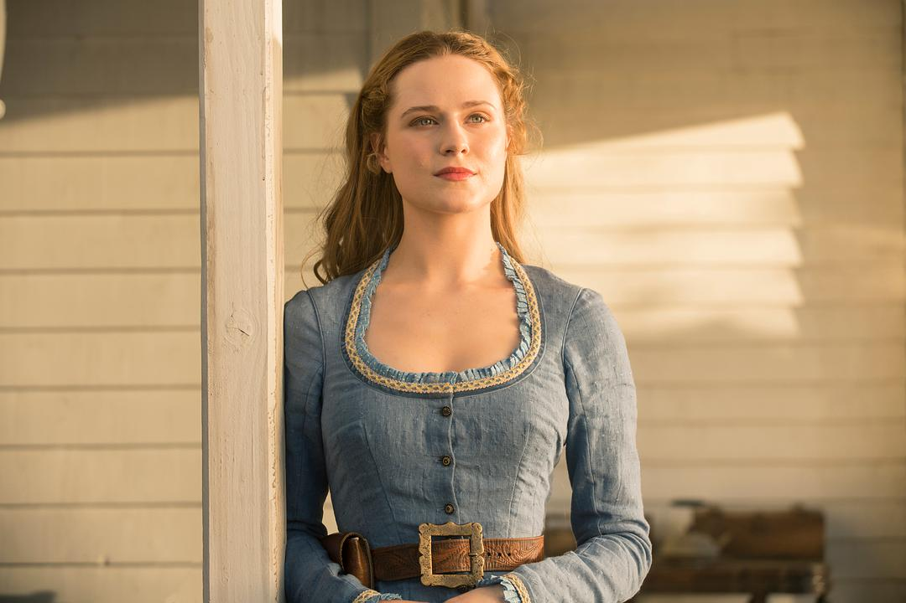
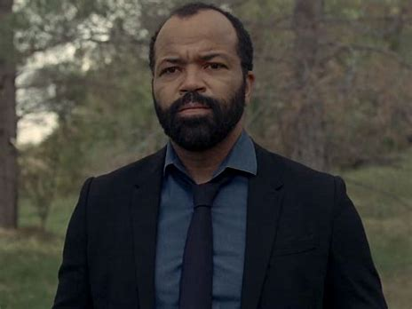
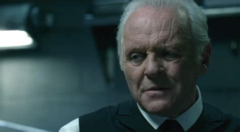
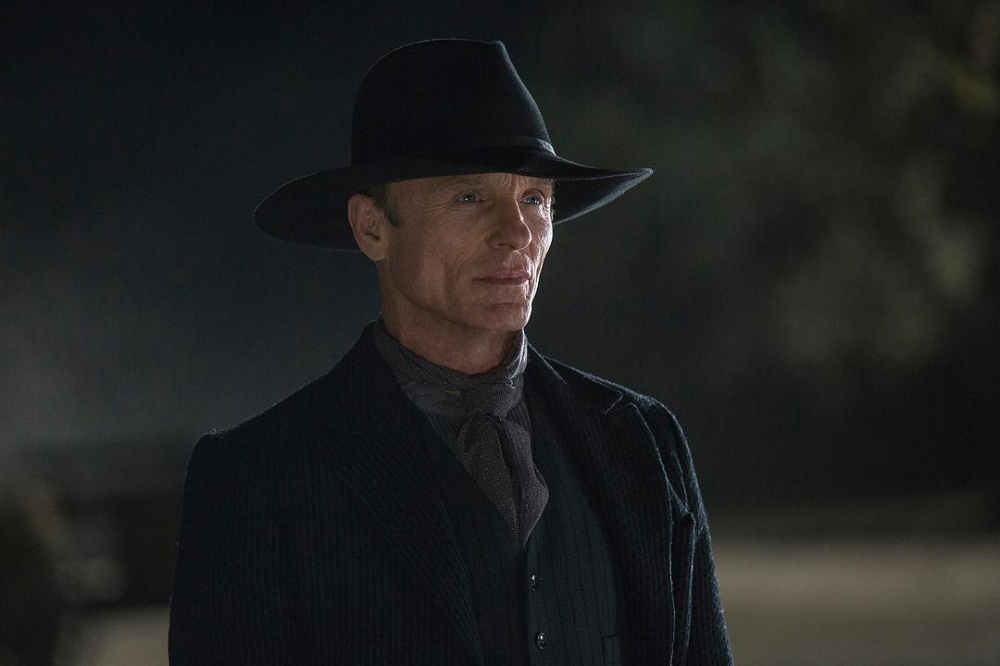
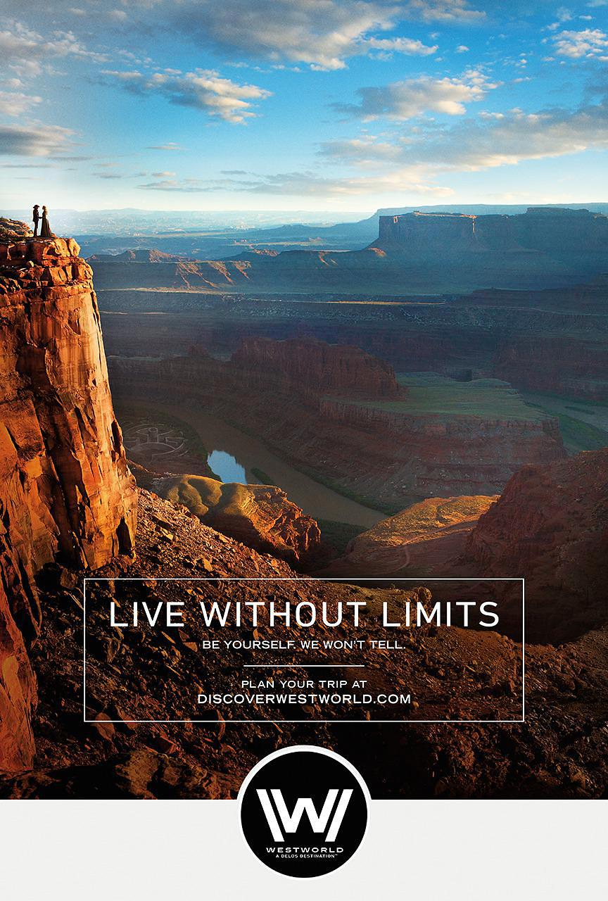
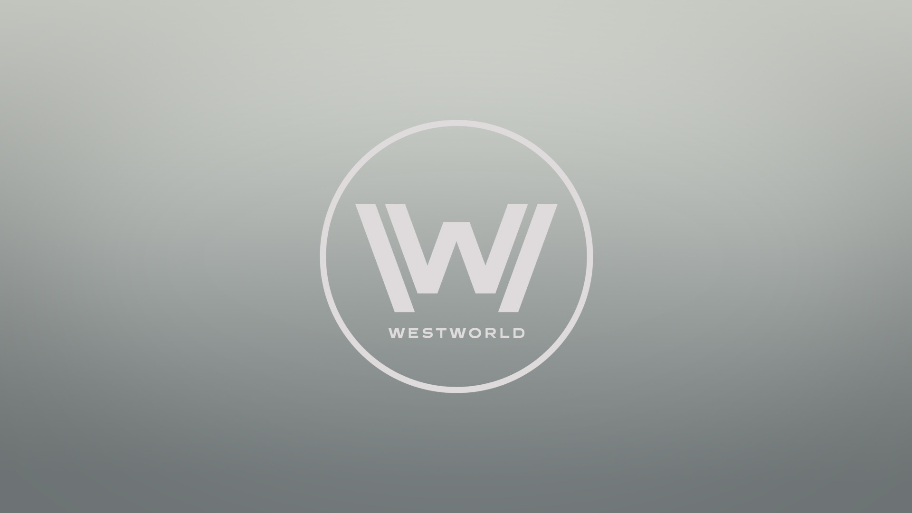

主要人物介绍

多洛莉丝·亚伯纳西 ----"有人选择看到世界的丑陋，我选择看到这世界的美丽"
|

伯纳德·劳----"每个人都有自己的一条路，我的路带我来到你身边"西部世界规划师，负责保证机器人准确无误为人类服务，执迷于如何让机器人更像人类。 |
|---|---|

罗伯特·福特----"这暴力的欢愉，必将有暴力的终结"
|

黑衣人（威廉）----"Hell is empty, and all the devils are here."
|
《西部世界》是2016年HBO发行的科幻类连续剧,由埃文·蕾切尔·伍德、安东尼·霍普金斯主演,乔纳森·诺兰担任总导演。


游客之所以会重返这座乐园，不是因为那些一眼就能看到的、花哨的东西。他们回到乐园是为了那些细微的东西。他们会再来，是因为他们以为自己发现了其他人没有注意到、某些会让他们爱上的东西。他们寻找并不是一个告诉他们自己是谁的故事,他们已经知道自己是谁了。他们来这里，是希望一窥自己有可能成为什么样的人。----创造者 Dr.Ford
西部世界预告片